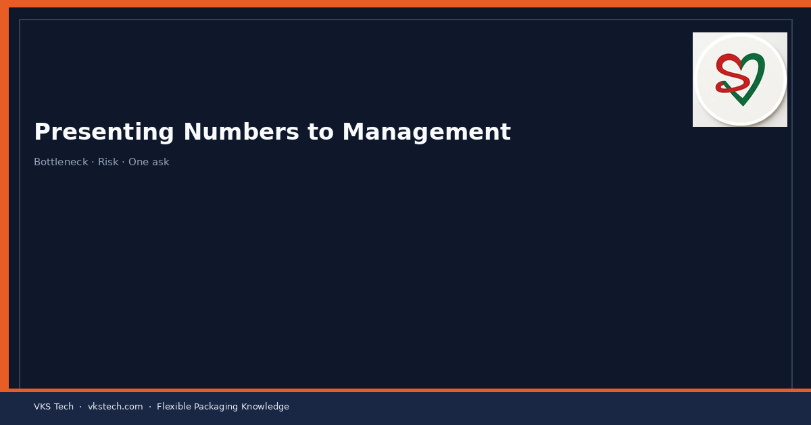
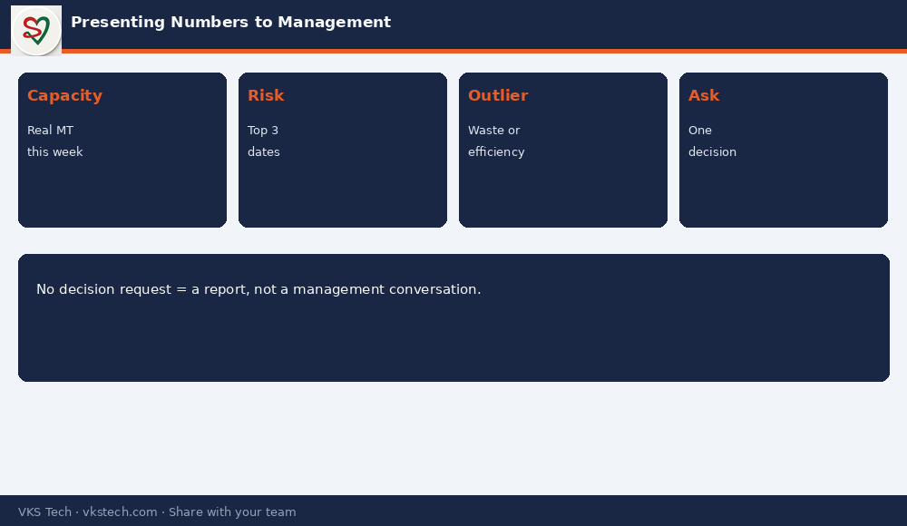

📈 Management Does Not Need 40 Rows of Excel. They Need Bottleneck, Risk Dates and One Clear Ask.
📖 9-min read · Communication · PPC + Plant Heads
PPC often loses the room by showing everything. Strong updates show: (1) what capacity we really have this week, (2) which customer dates are at risk, (3) what decision is needed today. The rest is appendix.
📌 One-Page Structure
- Bottleneck process + available MT / hours
- Top 3 at-risk orders (date + reason)
- Wastage or efficiency outlier this week
- One decision request (overtime / prioritise / buy / delay)

💡 Habit: If your update has no decision request, it is a report — not a management conversation.
📈 मैनेजमेंट को 40 पंक्तियों वाला एक्सेल नहीं चाहिए। बॉटलनेक, जोखिम वाली डेट और एक साफ माँग चाहिए।
📖 9-मिनट पढ़ें · कम्युनिकेशन · PPC
💡 आदत: अगर अपडेट में कोई निर्णय माँग नहीं — वह रिपोर्ट है, बातचीत नहीं।